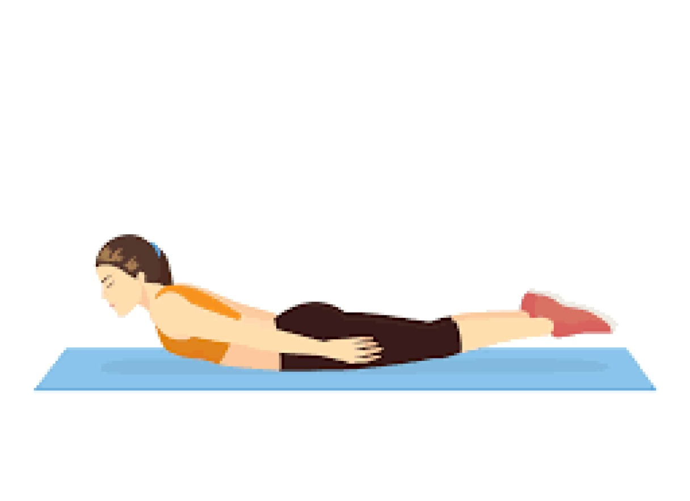
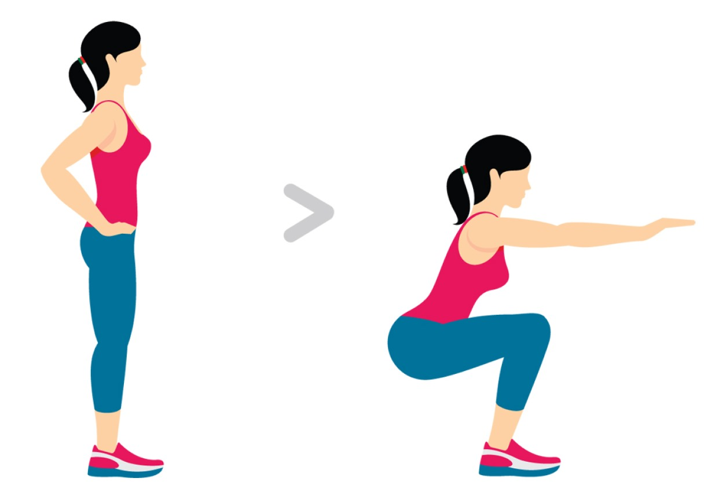

10 exercice pour se muscler chez soi sans materiel
1 - les squats

Les squats sont un exercice de musculation qui cible principalement les muscles des jambes, des fesses et du bas du dos. Voici comment effectuer un squat de base :
- Position de départ : Placez vos pieds légèrement plus larges que la largeur des épaules, avec les orteils légèrement tournés vers l'extérieur.
- Posture : Gardez le dos droit, les épaules en arrière et la tête droite. Regardez droit devant vous.
- Descente : Poussez vos hanches en arrière et pliez les genoux pour descendre votre corps vers le sol. Gardez les genoux alignés avec les pieds.
- Profondeur : Descendez aussi bas que possible tout en maintenant une bonne forme. Assurez-vous que vos genoux ne dépassent pas vos orteils.
- Remontée : Poussez à travers vos talons pour remonter à la position debout en contractant les muscles des jambes et des fesses.
2 - Le gainage superman

Le gainage Superman est un exercice de renforcement musculaire qui cible principalement les muscles du dos, les fessiers, les ischio-jambiers, les épaules et les muscles stabilisateurs du tronc. Voici comment effectuer le gainage Superman :
- Position de départ :
- Allongez-vous à plat ventre sur un tapis de yoga ou un autre support confortable.
- Étirez vos bras devant vous et étendez vos jambes.
- Exécution :
- Soulevez simultanément vos bras, votre poitrine et vos jambes du sol.
- Votre corps doit former une légère courbe, similaire à la position de vol de Superman.
- Maintenez la position pendant quelques secondes en contractant les muscles de votre dos, de vos fessiers et de votre tronc.
- Assurez-vous de garder votre cou aligné avec votre colonne vertébrale en regardant vers le bas.
- Retour à la position de départ :
- Descendez lentement vos bras, votre poitrine et vos jambes vers le sol.
- Reposez-vous brièvement avant de répéter l'exercice.
- Répétitions :
- Commencez par faire quelques répétitions et augmentez progressivement le nombre au fur et à mesure que votre force augmente.
- Faites attention à maintenir une forme correcte tout au long de l'exercice pour éviter les blessures.